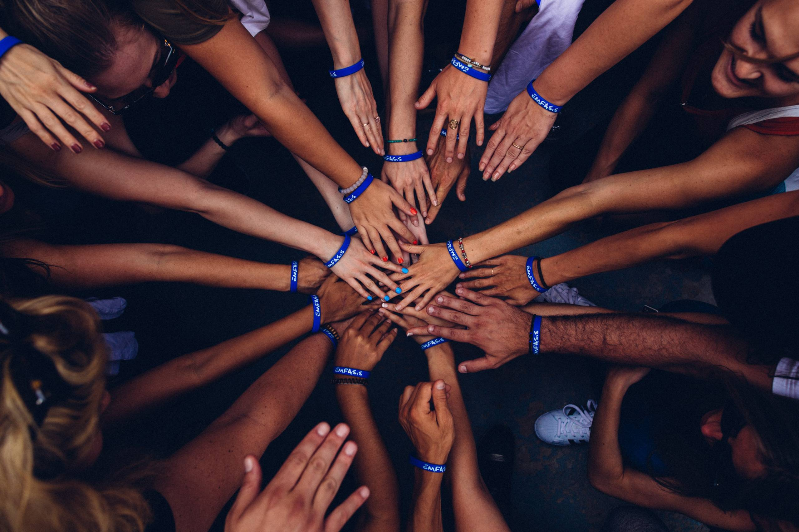

Solidarity Innovation: Transformando Valores em Ações
Seja bem-vindo à Solidarity Innovation, uma empresa que nasceu da crença de que os melhores valores da humanidade podem moldar um mundo mais justo, compassivo e sustentável. Nossa missão é inspirar e capacitar indivíduos e comunidades a agir em prol do bem comum. Permita-me apresentar nossa visão e o que nos move:
Quem Somos?
Somos um grupo de sonhadores, inovadores e agentes de mudança. Acreditamos que cada pequeno gesto importa e que, juntos, podemos criar um impacto significativo. Nossa equipe é diversificada, com habilidades complementares e um compromisso unificado com a solidariedade.
O Que Fazemos?
1. Plataforma de Voluntariado Digital:Conectamos voluntários a projetos sociais e ambientais. Seja plantando árvores, ensinando crianças ou apoiando idosos, todos têm um papel a desempenhar.
2. Produtos Sustentáveis:Desenvolvemos produtos ecológicos que não apenas são funcionais, mas também apoiam causas. Cada compra contribui para iniciativas sociais e ambientais.
3. Educação e Conscientização:Realizamos workshops, palestras e eventos para educar a comunidade sobre questões sociais e ambientais. Acreditamos que o conhecimento é o primeiro passo para a mudança.
4. Parcerias com ONGs e Empresas Sociais:Trabalhamos em conjunto com organizações que compartilham nossa visão. Juntos, amplificamos nosso impacto.
Nossos Projetos e Iniciativas
1. Hortas Comuniárias:
Estabeleça hortas urbanas em áreas carentes. Além de fornecer alimentos frescos, essas hortas podem ser espaços de aprendizado e conexão para a comunidade.
2. Programa de Bolsas de Estudos Sociais:
Ofereça bolsas de estudo para estudantes talentosos que enfrentam dificuldades financeiras. A educação é uma ferramenta poderosa para a transformação.
3. Campanhas de Limpeza Ambiental:
Mobilize voluntários para limpar praias, parques e áreas naturais. Além de preservar o meio ambiente, isso cria consciência sobre a importância da limpeza.
4. Incubadora de Empreendedorismo Social:
Ajude empreendedores sociais a desenvolverem suas ideias e projetos. Ofereça mentorias, recursos e espaço para colaboração.
5. Clube do Livro Solidário:
Crie um clube de leitura que não apenas discuta livros, mas também arrecade fundos para causas sociais. Cada livro lido contribui para uma boa causa.
6. Feira de Trocas Sustentáveis:
Organize eventos onde as pessoas possam trocar roupas, livros, brinquedos e outros itens. Isso promove o consumo consciente e a economia circular.
7. Projeto Arte nas Escolas:
Colabore com escolas para trazer artistas locais e oficinas de arte para os alunos. A expressão criativa fortalece a autoestima e a imaginação.
8. Mulheres na Tecnologia
A importância das mulheres na tecnologia está no fato de que, com mulheres, é possível ampliar a visão na criação de produtos e serviços tecnológicos. Esse é um campo que influencia diretamente a vida cotidiana e a sociedade como um todo, e é importante que as soluções tecnológicas reflitam as diferentes perspectivas e necessidades de todos os grupos sociais.
Nosso Compromisso Contínuo
Na Solidarity Innovation, não apenas iniciamos projetos, mas também os mantemos com dedicação contínua. Acreditamos que a mudança real acontece quando nos comprometemos a longo prazo.
Junte-se à Nossa Comunidade Solidária!
Convidamos você a fazer parte dessa jornada. Seja como voluntário, apoiador ou parceiro, sua contribuição é valiosa. Juntos, podemos construir um mundo onde a empatia, a solidariedade e a sustentabilidade prevaleçam.